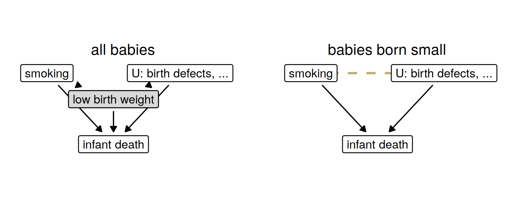
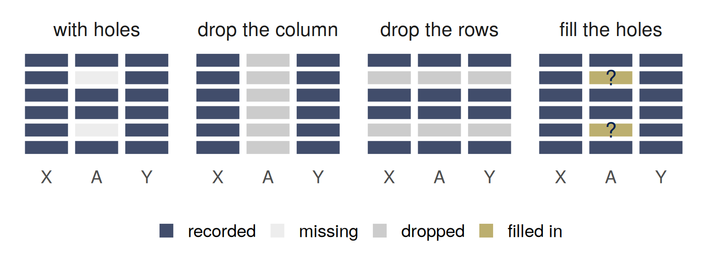
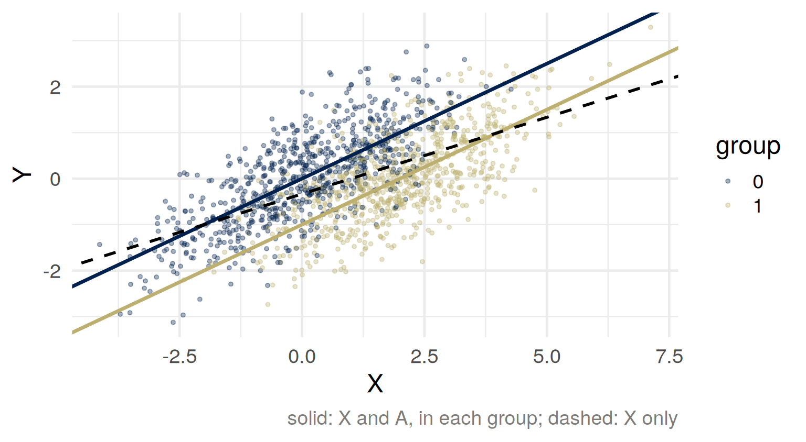
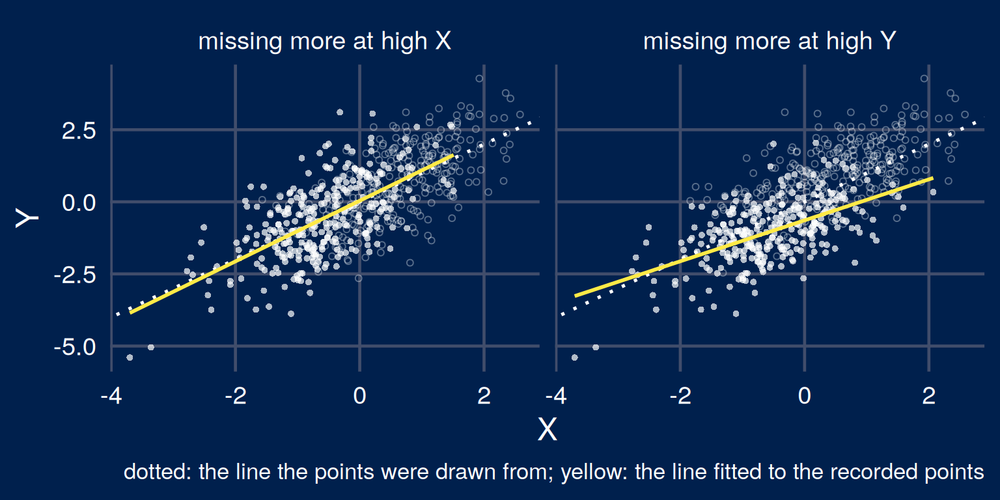

Part 1: Selection on a common effect
Part 2: Leaving a column out
Part 3: Who is missing
Part 4: Filling in
For the dataset you brought: what decided whether someone was in it? Does that depend on the outcome, on something that causes the outcome, or on neither?
Cost = need + resources + care-seeking + noise, the four independent. A place for everyone in the top 3% by cost.
Among the people offered a place, are need and resources related? Which way, and why?
US births, 1991:
One explanation on offer: smoking is good for babies who are born small.
Hernández-Díaz, Schisterman and Hernán (2006), “The birth weight ‘paradox’ uncovered?”, American Journal of Epidemiology 164(11), 1115–1120, doi:10.1093/aje/kwj275 (the abstract).
Draw a causal graph in which smoking helps nobody, and the reversal among low-birth-weight infants still appears.

Among babies born small, smoking and \(U\) are related, although they are not related among all babies.
On a path, a collider is a variable both arrows point into: \(A \to C \leftarrow Y\). The path is blocked until you condition on \(C\), or on something \(C\) causes.
| \(Z\) causes both \(A\) and \(Y\) | \(C\) is caused by both | |
|---|---|---|
| not adjusted for | an association that is not causal | none |
| adjusted for | removed | created |
Restricting a sample to one value of \(C\) (born small, hired, admitted, offered a place) is conditioning on \(C\).
Barocas, Hardt and Narayanan (2023), Fairness and Machine Learning: Limitations and Opportunities, chapter 5, “Colliders,” pages 112–113, and page 115 of the fairmlbook.org PDF.
\(A\) and \(Y\) independent, and \(C = Y + A\).
Among people with the same \(C\): \(\; A = C - Y\).
\(\operatorname{Cov}(Y, A \mid C) = \;?\)
\(A \perp Y\), \(\; C = \alpha Y + bA + \varepsilon\), \(\; \varepsilon\) independent of \((Y, A)\). Take out what \(C\) predicts, with slopes \(\gamma_Y = \operatorname{Cov}(Y, C)/\operatorname{Var}(C)\), \(\gamma_A\) likewise:
\[ \begin{aligned} \operatorname{Cov}(Y - \gamma_Y C,\; A - \gamma_A C) &= \operatorname{Cov}(Y, A) - \frac{\operatorname{Cov}(Y, C)\,\operatorname{Cov}(A, C)}{\operatorname{Var}(C)} \\ &= -\,\frac{\alpha\, b\, \operatorname{Var}(Y)\operatorname{Var}(A)}{\operatorname{Var}(C)} \end{aligned} \]
Adjusting linearly for a common effect relates its causes, sign opposite to \(\alpha b\) here (for jointly normal variables, the covariance given \(C\)). Outside the linear model, sign and size depend on details the graph does not show (Elwert and Winship).
On the last sentence: Elwert and Winship (2014), “Endogenous Selection Bias: The Problem of Conditioning on a Collider Variable,” Annual Review of Sociology 40, 31–53, doi:10.1146/annurev-soc-071913-043455.
A dataset is a rule for who is a row and a rule for what is a column. A column is absent because the law forbids it, because nobody collected it, or because it was half empty and got dropped. A column with holes forces one of three choices: this part, Part 3, Part 4.

\(Y\): how well someone would do a job, \(Y \sim N(0, 1)\), larger is better. \(\; A \in \{0, 1\}\): a group, half the population each, independent of \(Y\).
\(X = Y + 2A + \varepsilon\), \(\; \varepsilon \sim N(0, 1)\) independent of \((Y, A)\): a test score. Group 1 gets two points from coaching, and nothing on the job.
Suppose the model may not have \(A\): the law forbids it, or the half-empty column was dropped.
Predict \(Y\) from \(X\) alone, or from \(X\) and \(A\). Which model is more accurate? Which predicts a bigger gap between the groups?
| group | mean of Y | predicted, X only | predicted, X and A | MSE, X only | MSE, X and A |
|---|---|---|---|---|---|
| 0 | 0.00 | -0.33 | 0.01 | 0.66 | 0.50 |
| 1 | 0.01 | 0.34 | 0.00 | 0.67 | 0.50 |
Leaving \(A\) out: less accurate in both groups, and a gap between groups whose \(Y\) has the same distribution.
ST313 coursework 2 (2024) and its worked solution: \(A \to X \leftarrow Y\), betaY = 1, betaA = 2 (in the formula before, \(\alpha = 1\) and \(b = 2\)).

\(\operatorname{Var}(A) = \tfrac14\), so \(\operatorname{Var}(X) = 1 + 4 \cdot \tfrac14 + 1 = 3\), \(\; E[X] = 1\), \(\; \operatorname{Cov}(X, Y) = 1\).
| \(X\) only | \(X\) and \(A\) | |
|---|---|---|
| prediction | \(\hat Y = \tfrac13 (X - 1)\) | \(\hat Y = \tfrac12 X - A\) |
| mean prediction, group 0 and group 1 | \(-\tfrac13\) and \(+\tfrac13\) | \(0\) and \(0\) |
| mean squared error, each group | \(\tfrac23\) | \(\tfrac12\) |
The truth: mean \(Y\) is \(0\) in both groups. The coefficient on \(A\) is \(-1\).
Less accurate, more unequal: what was leaving the column out for?
If \(A\) shaped the recorded outcome itself, a model using \(A\) learns that.
Equality Act 2010 (c. 15), sections 13(1) and 19, legislation.gov.uk/ukpga/2010/15.
Does \(A\) affect \(Y\)?
lm(Y ~ X + A): \(\; -1\). Among people with the same score, group 1 does worse.True as a prediction at a fixed score. False as a statement about what changing \(A\) would do.
To predict \(Y\): condition on \(X\) and \(A\). To estimate the effect of \(A\) on \(Y\): do not condition on \(X\).
\(C = 1\) if \(Y\) is observed: the complete cases. \(X\) is always recorded.
You can check whether \(C\) depends on \(X\). You cannot check, from these data, whether it depends on \(Y\) once \(X\) is accounted for.
Rubin (1976), “Inference and missing data,” Biometrika 63(3), 581–592, doi:10.1093/biomet/63.3.581; van Buuren (2018), Flexible Imputation of Missing Data, 2nd edition, Chapman and Hall/CRC, doi:10.1201/9780429492259, sections 1.2 and 2.2.
MCAR, MAR or MNAR? Is the mean of the recorded incomes too high, too low, or neither?
\[ \begin{aligned} E[Y \mid C = 1] &= \frac{E[YC]}{P(C = 1)} \\ \operatorname{Cov}(Y, C) &= E[YC] - E[Y]\,P(C = 1) \\ E[Y \mid C = 1] - E[Y] &= \frac{\operatorname{Cov}(Y, C)}{P(C = 1)} \end{aligned} \]
Two age groups, equally common. Mean income 40 in the younger, 60 in the older (thousands).
The younger answer the income question with probability 0.8, the older with probability 0.4. Within each group, answering is unrelated to income.
The true mean? The mean among those who answered? Check with the formula.

Missing on \(X\) only: \(E[Y \mid X, C = 1] = E[Y \mid X]\), a correct line survives. Missing on \(Y\) given \(X\): it need not; here it flattens.
\(e(X) = P(C = 1 \mid X) > 0\). Under MAR:
\[ E\left[\frac{C\,Y}{e(X)}\right] = E\left[\frac{E[C \mid X]\;E[Y \mid X]}{e(X)}\right] = E\big[E[Y \mid X]\big] = E[Y] \]
Income example: \(\tfrac12 (0.8)(40)/0.8 + \tfrac12 (0.4)(60)/0.4 = 50\).
Horvitz and Thompson (1952), “A Generalization of Sampling Without Replacement from a Finite Universe,” Journal of the American Statistical Association 47(260), 663–685, doi:10.1080/01621459.1952.10483446. The same weights for people lost to follow-up: Hernán and Robins, Causal Inference: What If, section 8.5.
Bail: whether a defendant fails to appear is recorded only if the judge released them. If the judge used things the record does not have, and they predict the outcome, the detained are those expected to do worst given the record.
“the observed outcomes are themselves a consequence of the existing choices of the human decision-makers”
A study in the file drawer, missing because of its own \(z\)-value; a post that did not reach your feed, because it was not extreme enough.
Lakkaraju, Kleinberg, Leskovec, Ludwig and Mullainathan (2017), “The Selective Labels Problem,” Proceedings of the 23rd ACM SIGKDD International Conference on Knowledge Discovery and Data Mining, 275–284, doi:10.1145/3097983.3098066; the quotation is from the abstract, page 275.
An imputation model is an assumption about the values you did not observe, written down where it can be argued with.
van Buuren (2018), Flexible Imputation of Missing Data, 2nd edition, sections 1.3 and 2.3.2.
| MSE, A recorded | MSE, A missing | gap, A recorded | gap, A missing | |
|---|---|---|---|---|
| drop the column | 0.67 | 0.66 | 0.66 | 0.66 |
| drop the rows | 0.50 | no prediction | -0.01 | no prediction |
| fill in | 0.50 | 0.66 | -0.01 | 0.65 |
\(A\) recorded for half the rows, at random. Gap: mean prediction for group 1 minus group 0; the truth is \(0\). Drop the rows: fit on the complete rows, predict only where \(A\) is recorded. Fill in: fit on the completed rows; where \(A\) is missing, average over \(P(A \mid X)\).
Filling in recovers the fit, not the missing information. Where \(A\) is recorded, a model that uses it has no gap; where it is missing, nothing predicts better than \(X\) alone, and the gap is back.
A university’s records cover admitted students only. Admission is by exam grades, with a lower pass mark for applicants from a feeder school. Among applicants, grades and feeder school are unrelated.
Draw the graph and mark what the records condition on. Among admitted students, what association between feeder school and grades do you expect, and why? An analyst concludes that feeder schools produce weaker students. What is wrong?
…and why?
In the test-score example, would you leave the group out of the model, or use it? What graph does your answer assume?
For next time: bring one rule or score that sorts people into two groups (admit or reject, flag or clear, treat or not), with the two ways it can be wrong and who pays for each.